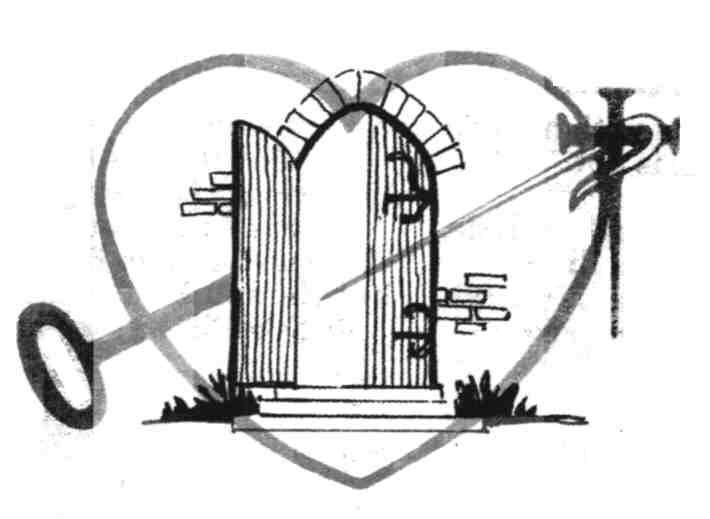
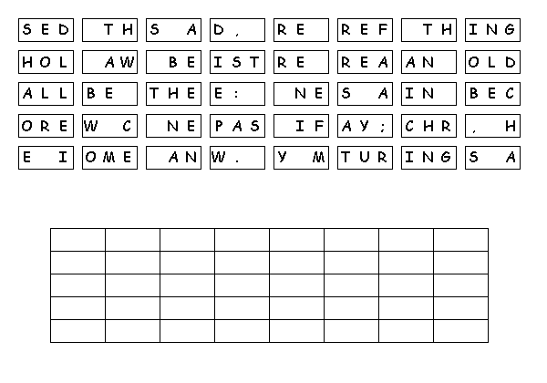

This
week's lessons:1
Samuel 15:34 - 16:13 and Psalm
20 or Ezekiel
17:22-24 and Psalm
92:1-4, 12-15,
2
Corinthians 5:6-10, (11-13), 14-17, Mark
4:26-34
Middle-School Pew-work ...Page 2
What does it mean to you to “walk by faith, not by sight”
______________________________________________________________________________________________________________________________________________________________________________________________________________________________________________________________________________________________________________________________________________________________________________________________________________________________________________________________________________________________________________________________________________________________________________________________________________________________________________________________________________________________________________________________
 |
 |
Next Week:1 Samuel 17:(1a, 4-11, 19-23), 32-49 and Psalm 9:9-20 or 1 Samuel 17:57-18:5, 18:10-16 and Psalm 133 or Job 38:1-11 and Psalm 107:1-3, 23-32, 2 Corinthians 6:1-13, Mark 4:35-41